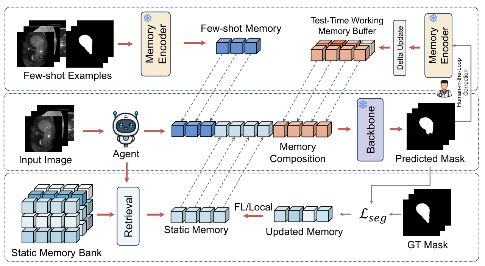
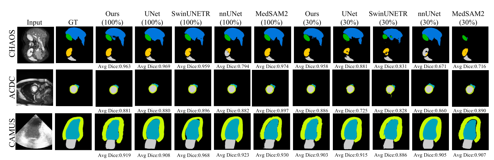

Supervised static memory
Optimize compact memory tokens or pseudo-image and pseudo-mask logits while keeping SAM2 frozen.
Training code ↗MemSeg-Agent
A Memory-Augmented Agent for Medical Image Segmentation
We keep the segmentation backbone frozen and adapt through memory—bringing supervised learning, few-shot support, and test-time corrections into one framework.
Author affiliations and paper detailsTHE IDEA
Medical images change across scanners, institutions, and patient populations. Repeatedly fine-tuning a large model is not always practical.
Our framework shifts adaptation into memory. Learned static priors provide a starting point; labeled examples and corrected observations supply additional context as the task or domain changes.
Explore the methodology01 / METHOD
Adaptation lives in the priors that condition the model.

Optimize compact memory tokens or pseudo-image and pseudo-mask logits while keeping SAM2 frozen.
Training code ↗Encode labeled support pairs into non-parametric memory, without a new round of backbone training.
Support encoding ↗Retrieve relevant observations and incorporate corrections through similarity-gated memory updates.
Working-memory code ↗Our controller coordinates memory use. For federated learning, clients can exchange trained static-memory tensors rather than backbone weights.
FEDERATED LEARNING
Lightweight communication for collaborative medical image segmentation.
Full-model federated fine-tuning repeatedly communicates a foundation model's weights. We instead keep the backbone frozen and exchange only task-specific static memory, while images and annotations remain at each site.
Our four-site FedAvg experiment achieves competitive segmentation performance with memory-only updates. See the Ours – Static Memory – FL row in Table 2 for Dice and HD95 across CHAOS, ACDC, and CAMUS.
524,288 values, including memory tokens and their positional parameters.
74.3× smaller payload4,194,304 values: a 3-channel pseudo-image and 1-channel pseudo-mask at 1024 × 1024. 16 MiB in FP32.
9.3× smaller payload38,962,498 model parameters. Even the tiny backbone requires substantially more communication.
FP32 reference payloadPayload accounting: uncompressed FP32 tensors per client, per one-way transmission; 1 MiB = 2²⁰ bytes. Ratios compare against full SAM2-tiny parameter exchange, not parameter-efficient fine-tuning. One upload plus one download doubles these sizes; total traffic also scales with clients and rounds. We exclude protocol overhead, optimizer state and one-time backbone distribution. “~4M” is a parameter count, not 4 MB; the 2 MiB compact memory is not the pseudo-observation payload.
02 / RESULTS
Train on CAMUS. Test on CardiacUDA.
No backbone fine-tuning at test time.
Static + working memory
Published cross-domain results on 8 external patients / 428 frames. Working memory uses a simulated correction-feedback protocol—not label-free adaptation.
Paper · Table 1 ↗Dice (%) · Higher is better
| Method | LV | LA | Average |
|---|---|---|---|
| nnU-Net | 14.65 | 30.64 | 22.65 |
| SwinUNETR | 33.57 | 0.07 | 16.82 |
| U-Net | 20.30 | 0.03 | 10.15 |
| MedSAM2 | 47.26 | 38.31 | 42.75 |
| Ours (Static) | 39.75 | 21.72 | 30.74 |
| Ours (Static + WM) | 81.53 | 73.07 | 77.30 |

EXPERIMENTAL DATA
Cardiac MRI
100 patientsAnnotated ED / ES phasesEchocardiography
500 patients2CH / 4CH · ED / ESAbdominal MRI
20 patients usedLabeled T2-SPIR training subsetEchocardiography
8 patients428 annotated framesCounts refer to our experimental subsets. CHAOS MRI has 40 subjects overall; we use the 20-subject labeled subset. CardiacUDA is test-only. Data description and access links ↗
03 / OPEN SOURCE
Start with static-memory training, then explore test-time memory composition and external-domain evaluation.
Datasets and pretrained weights are obtained separately. Consult the README for environment setup, experiment settings, and current reproduction limits.
git clone https://github.com/b0wenchen/MemSeg-Agent.git
cd MemSeg-Agent
# Install a CUDA-compatible PyTorch build first.
pip install -r requirements.txt
# Configure data and checkpoint paths before running.
python scripts/train_static.py --config configs/default.yaml04 / CITATION
Please cite our paper and the original backbone and dataset sources.
arXiv:2603.05873 ↗@article{chen2026memsegagent,
title={Shifting Adaptation from Weight Space to Memory Space:
A Memory-Augmented Agent for Medical Image Segmentation},
author={Chen, Bowen and Gao, Qiaohui and Wan, Shaowen and
Sun, Shanhui and Liu, Wei and Li, Xiang and
Liu, Tianming and Zhao, Lin},
journal={arXiv preprint arXiv:2603.05873},
year={2026}
}